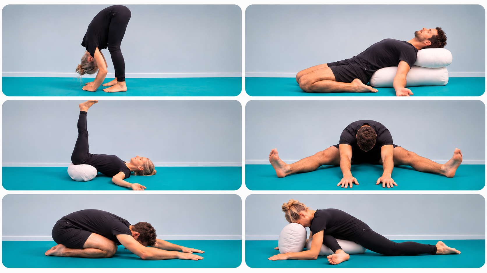

Yin-Yoga i Värsås
Längtar du efter att varva ner, släppa på spänningar, öka rörligheten och ge dig själv en stunds återhämtning?
Varmt välkommen att prova Yin Yoga på Värsås Sportcenter!
Vad är Yin Yoga?
Yin Yoga är en lugn och stillsam yogaform som har blivit mycket populär som motvikt till våra stressiga och utmanande liv. Den ger oss en stund för återhämtning och möjlighet att släppa på spänningar som har samlats i kroppen.
Yin Yoga kan också vara ett fint komplement till muskeluppbyggande träning, eftersom det ger kroppen möjlighet till återhämtning mellan mer ansträngande träningspass.
I Yin Yoga stannar vi passivt i varje position i upp till 5 minuter för att ge kroppen tid att släppa på muskelspänningar och låta töjningen verka på djupet. Det påverkar även kroppens bindväv (fascia). Fascian bildar ett sammanhängande nätverk genom hela kroppen som förbinder, ger stöd och bidrar till rörlighet i muskler, organ och andra vävnader.
Andningen är en viktig del av Yin Yoga. Genom att sakta ner och andas lugnt kan vi påverka nervsystemet och hjälpa kroppen att gå från ett tillstånd av hög stress (fight or flight) till ett tillstånd av vila och återhämtning (rest and digest). Den lugnande effekten på nervsystemet kan dessutom bidra till bättre sömnkvalitet, vilket främjar kroppens återhämtning.
Du behöver inte ha någon tidigare erfarenhet av yoga – alla är varmt välkomna!
Välkommen att prova!
Måndag 7 december
Kl. 18.30–20.00
Pris: 150 kr
Boka din plats